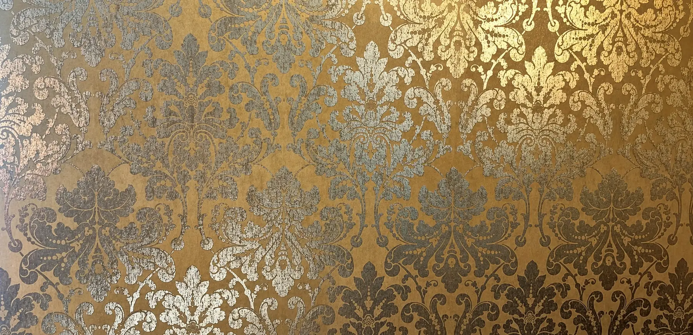

Aus dem Keller
Weine & Getränke
Österreichische und internationale Weine, dazu Sake, Bier und Tee – abgestimmt auf unsere Küche. Gerne beraten wir Sie im Lokal persönlich.
Flaschenweine weiß · 0,75 l
Flasche / 1/8
-
Grüner Veltliner Federspiel
19,50 / 3,60Loibenberg · Domäne Wachau, Dürnstein
Mittleres Strohgelb, ausgeprägt und offen im Geruch; Aromen nach gelbem Apfel, etwas Tabak und Würze, aber auch zarte Exotik ist wahrnehmbar. Typisch für einen Loibenberg ist dieses Federspiel relativ schmelzig und gehaltvoll, doch balanciert die Säure den Wein perfekt aus. Eleganter Abgang.
-
Grüner Veltliner
20,50 / 3,80Gebling · Weingut Buchegger, Gedersdorf/Kremstal
„Saftig, dicht, viel Schmalz und Schmelz, sehr würzig, lang, vielschichtig, spannend und hochelegant“ — Vinaria-Bewertung!
-
Riesling
20,50 / 3,80Gaisberg · Weingut Birgit Eichinger, Strass
Zart vegetales Duftkleid; Pfingstrosen und Mandarinen, zu Beginn fast verschämt, gibt am Gaumen unendlich Stoff, sehr saftig, offeriert dadurch feinen Trinkfluss, feine Linien, harmonisch, modellhaft. Schöner Speisebegleiter zur leichten Küche.
-
Sauvignon Blanc Klassik
22,70 / 4,20Weingut Hannes Sabathi, Gamlitz/Südsteiermark
Helles Gelbgrün, klassisches Aromenspiel, Stachelbeere, Ribiselblätter, viel Würze und feine weiße Blütenanklänge, erfrischend am Gaumen, sehr fruchtbetont, saftig, klare Sortentypizität, würzig ausklingend, langer Nachhall.
-
Grüner Veltliner
29,50Tradition · Weingut Schloß Gobelsburg, Langenlois
Geradezu nostalgisch anmutendes Bukett mit Anklängen von Bienenwachs und Sommerstroh, zeigt auch etwas Tannin; schokoladig und feinherb, von feiner Kräuterwürze durchzogen, noch hefig und jung erhalten, eine gelungene Reminiszenz an „vergangene“ Ausbautraditionen, rund und in jeder Hinsicht sympathisch, scheint sich nur im Zeitlupentempo zu entwickeln.
-
Sauvignon Blanc
42,00Ried Welles · Weingut Lackner-Tinnacher, Gamlitz
Reichhaltig-würziges Bukett am Gaumen, nach Johannisbeere, mineralisch.
Flaschenweine rot · 0,75 l
Flasche / 1/8
-
Blaufränkisch
17,20 / 3,20Weingut Paul Kerschbau
Rubingranat, jugendlich violette Reflexe, Wasserrand; in der Nase zarter Nougattouch, insgesamt eher verhaltene Nuancen; am Gaumen dunkle Frucht, gut harmonisierte Tannine, sehr trinkfreudig.
-
Cabernet Sauvignon Selection
17,20 / 3,20Weingut Josef Salzl, Illmitz/Neusiedlersee
Dunkles Rubingranat, violette Reflexe, zarte Randaufhellung; in der Nase reife Dörrobstanklänge, an Zwetschken erinnernd, Cassis; am Gaumen typische Johannisbeerfrucht, schwarze Oliven, Kräuter, feine weiche Tannine, Schoko klingt an, saftig, sehr dicht, ganz dezente, schön eingebundene Röstaromen, die keineswegs aufdringlich wirken; der Ausbau im gebrauchten alten Barriquefass passt perfekt, schöne Harmonie; vielseitiger Speisebegleiter.
-
Vulcano
29,8055% Blaufränkisch, 20% Cabernet Sauvignon, 15% Merlot, 10% Zweigelt · Weingut Hans Igler, Deutschkreutz/Burgenland
Dieser Wein präsentiert sich dunkelrubinrot mit einer schönen Frucht, feinen Röstaromen in der Nase, Finesse, Frucht und Würze am Gaumen. Der kompakte Körper und die gut eingebundenen, reifen Tannine ergeben einen Wein mit viel Kraft.
-
Insoglio del Cinghiale
35,00Cabernet Franc, Cabernet Sauvignon, Syrah · Toskana IGT · Tenuta Campo di Sasso, Bibbona/Toskana
Jugendliches Purpurrot. In der Nase viel Brombeere, begleitet von leichter Würze, allgemein recht fruchtbetont. Im Gaumen wieder süßliche Frucht, saftige Frische, gut stützende Säure und moderne Holzaromatik. Sehr gut gelungen.
Schankweine
-
Weißwein
- 1/8 L2,90
- 1/4 L4,70
-
Weißwein Gespritzt
3,701/4 L
-
Rotwein
- 1/8 L2,90
- 1/4 L4,70
-
Rotwein Gespritzt
3,701/4 L
-
Aperoll Gespritzt
5,701/4 L
-
Sake (Reiswein, aus Japan)
5,7012 cl
-
Pflaumenwein (aus Japan)
5,7012 cl
-
Prosecco del Veneto (Sacchetto)
- 0,2 L8,50
- 0,75 L25,90
-
Champagner (Carte d’or Brut „Drappier“)
- 0,2 L29,00
- 0,75 L85,00
Shots
-
Olmeca/Gold
3,502 cl
-
Vodka
3,502 cl
-
Rum Havana
3,502 cl
-
Martini dry / rosso
3,504 cl
-
Ginsengschnaps
4,802 cl
-
Soju (koreanisch)
3,204 cl
-
Soju (Flasche)
15,000,36 L
Long Drinks
-
Gin Tonic
7,000,25 L
-
Malibu Orange
7,000,25 L
-
Vodka Orange
7,000,25 L
-
Vodka Red Bull
7,200,25 L
-
Bourbon Cola
7,200,25 L
-
Campari Soda
5,200,25 L
-
Campari Orange
6,200,25 L
-
Bacardi Cola
7,000,25 L
Tee
-
Grüner Tee
4,50 -
Genmei Tee (Japan Reis Tee)
4,50 -
Jasmin Tee
4,50 -
Ginseng Tee
5,50 -
Ingwer Tee
5,80
Bier
-
Stiegl-Pils
vom Fass
- 0,2 L3,50
- 0,3 L4,20
- 0,5 L5,50
-
Stiegl-Zwickl
4,50Flasche
-
Hirter Privat Pils
5,50Flasche · 0,5 L
-
König Ludwig Weissbier Hell
5,50Flasche · 0,5 L
-
König Ludwig Dunkel
5,50Flasche · 0,5 L
-
Stiegl-Gaudi-Radler Zitrone
5,50Flasche · 0,5 L
-
Clausthaler alkoholfrei
5,50Flasche · 0,5 L
-
Kirin Bier
4,90japanisches Bier · Flasche · 0,33 L
-
Asahi Bier
4,90japanisches Bier · Flasche · 0,33 L
Alle Preise in Euro inklusive Steuern und Abgaben. Änderungen und Druckfehler vorbehalten – maßgeblich ist die Karte im Lokal.
Hunger bekommen?
Reservieren Sie telefonisch einen Tisch oder bestellen Sie direkt nach Hause.